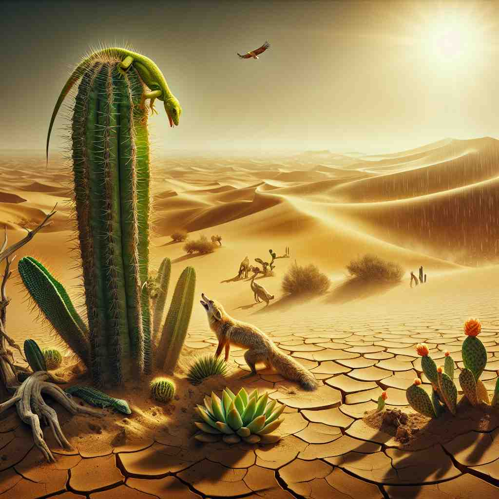
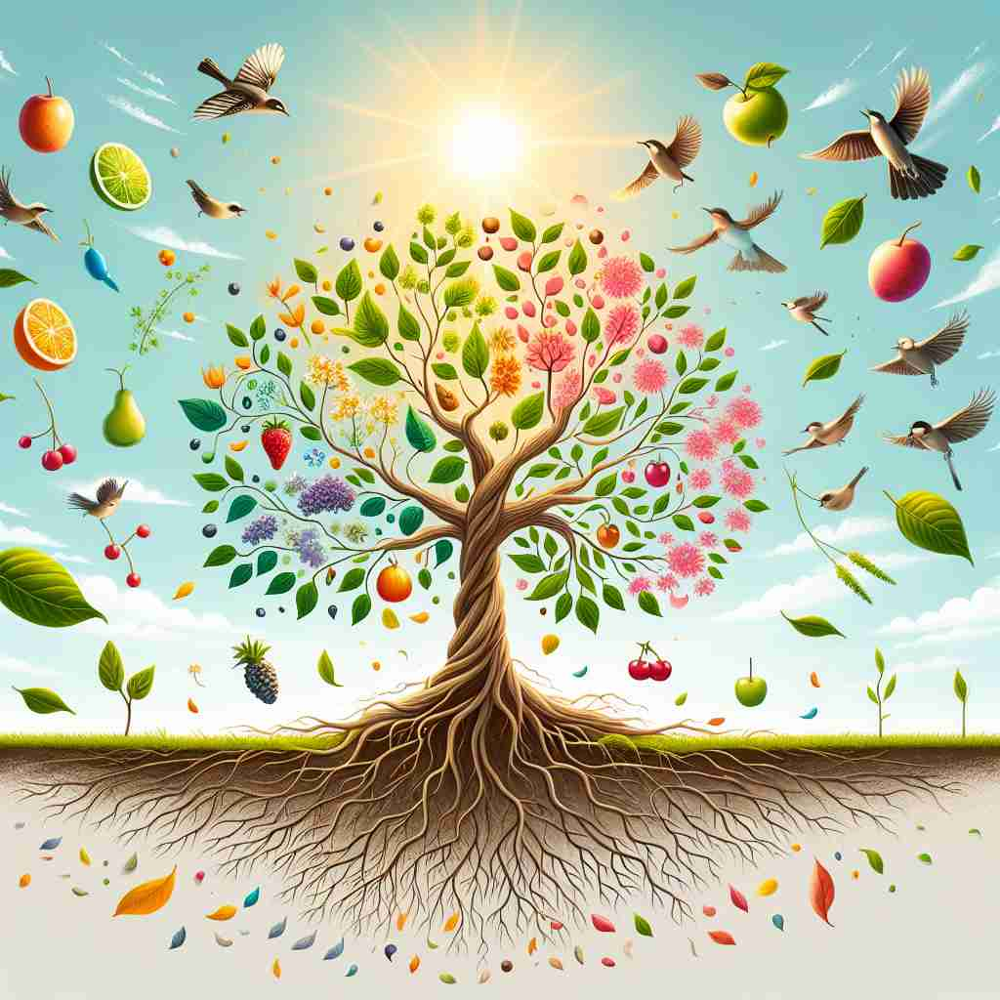

🗝️ n. the state of being alive
🖼️ 在一个阳光明媚的早晨，一只小猫伸着懒腰，从睡梦中醒来。它好奇地东张西望，感受着世界的一切，这就是 'life' 作为生存状态的体现。
🔍 想象'life'是一棵树，其核心是'存活状态'。树干代表生命的时间跨度，树枝代表不同的生活方式，树叶象征各种生命形式，树的生机勃勃体现了生命的活力。树的年轮记录了生平，而被囚禁的树则失去了自由生长的机会。通过这个生命树的比喻，你可以更容易理解和记忆'life'的多重含义。

💬 The newborn represents new life full of possibilities.

💬 The doctor works hard to save a life during the surgery.

💬 In the desert, you can see the circle of life with plants and animals thriving together.

💬 The tree looks full of life under the bright sun.
🔗 1. lifestyle: 生活方式 2. lifelong: 终生的 3. lifeless: 无生命的
🗝️ n. the period between birth and death
🖼️ 在一个温馨的生日聚会上，家人们围在老人身边，回忆着他一生的辉煌与风雨，从他的出生到现在的每一个重要时刻。这个整个过程就是 'life' 作为生命旅程的诠释。
💬 She lived a long and happy life.
❓ 存活状态的持续时间
🗝️ n. a way of living
🖼️ 在一个现代化的城市中，一个年轻人每天骑自行车上下班，享受着简单而自然的生活方式，这种生活模式就是他的 'life'。
💬 City life is very different from country life.
❓ 存活状态的具体表现形式
🗝️ n. living things
🖼️ 在一片茂密的雨林中，鸟儿、昆虫和植物共同构成了丰富的生态系统。这些丰富多彩的生物代表了 'life' 作为生命体的意义。
💬 Scientists are searching for life on other planets.
❓ 处于存活状态的实体
🗝️ n. energy or excitement
🖼️ 在一个音乐节上，人们随着节奏起舞，脸上洋溢着无尽的欢愉和热情，这种活力和激动就是 'life' 在这里的体现。
💬 The party was full of life.
❓ 存活状态的活力表现
🗝️ n. a biography
🖼️ 在一个安静的书店里，一位女士正在翻阅一本名人的传记，书中的文字记录了他的一生，这本传记就是那个人的 'life'。
💬 He's writing a life of Shakespeare.
❓ 记录某人存活期间经历的作品
🗝️ n. a prison sentence that lasts until death
🖼️ 在阴暗的监狱大厅中，一名犯人默默地走进自己的牢房，他被判处无期徒刑，这种刑罚意味着他将在这里度过 'life'。
💬 The murderer was sentenced to life in prison.
❓ 剥夺自由直至生命结束